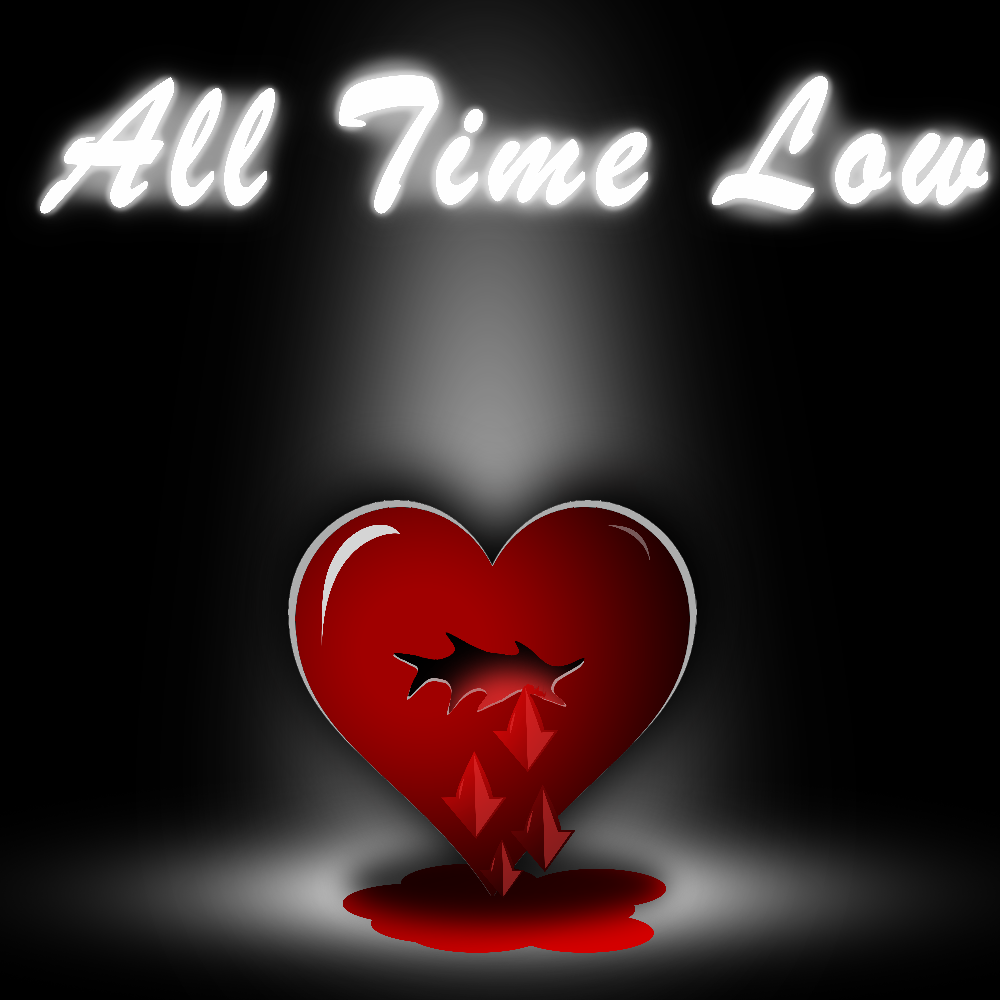

Description: All Time Low is a commissioned graphic design requested by Bay Area multi-instrumentalist and producer Chrei Torres. The artwork was commissioned as an album cover for Chrei Torres’ cover of All Time Low by Jon Bellion. The song is about the emotions of a breakup and, in the midst of heartbreak, questioning one’s existence. The song tackles the theme of hitting a low in life and letting the significant other know that life has gone downhill since the split. Specifically, according to Bellion, the heart of the message comes in one’s first love and the devastation of when the love ends. Bellion describes that feeling to be painful beyond human comprehension. Interestingly, the song captivates what it feels like to be on day three of a breakup, which makes sense as the early phases of a breakup are the most heavily taxing for any person. In the album cover, the heart is the focal point, with it being in the spotlight of a dark stage. The heart is seen bleeding, with a puddle of blood under it and blood drops taking the shape of arrows pointing down. The arrows are symbolic of the “all time low,” as the feeling of heartbreak is one that is kept inside. As stated before, the heart is the focal point of the cover, and is symbolic of the phrase “my heart is swelling” or “I’m bleeding out.” Because this particular artwork is unique in that it is an album cover, I set the environment to be that of an empty stage.
Discipline & Materials: The medium for this project was Photoshop, as I believed the elements that incorporated in the project work best in Photoshop. One of the most important elements of the album cover is the spotlight because it gives the audience an idea of the setting in the album cover: an empty stage. The light is also important because it illuminated the aspect of a lonely heart on an empty stage, showing how the heart is handling being at an all time low. Another important element made possible through Photoshop was the appearance of the heart. I wanted the heart to appear hurt and broken, and Photoshop best demonstrated such by the blood drops and the crack on the heart. I wanted the droplets to add to the feeling of heartbreak, which was done by designing them to take upon the shape of a downward arrow. Lastly, the broken heart is the cornerstone for the album cover, as there are many artworks that feature broken hearts. One that was used as inspiration was Kanye West’s album cover for 808’s and Heartbreaks. Being a widely acclaimed album, the album cover has also cemented itself in mainstream media. The broken heart, thus being a recognized element, would be the center piece for the art for both its popularity and context to the song.
Artist Statement: The album cover for All Time Low illustrates the themes of heartbreak and the emotions that occur after a breakup. People respond to heartbreak in different ways, but suffice it to say that both parties experience varying forms of hurt. While pain can be seen physically from both people from an outsider's perspective, great turmoil occurs emotionally. Thus, heartbreak can only be understood by those who endure it, especially when it occurs during the early phases. When discussing heartbreak or, in the context of the song, hitting an all time low, those who experience it make great mention of their heart and how their heart hurts. They might use phrases such as “my heart is swelling” or “my heart is bleeding,” which are overexaggrations of their pain. Such statements are the centerpiece of my album cover, and physical projections I set aside in this project. The spotlight that illuminates the broken heart is an element that also acts as the centerpiece, as it gives the audience an indication of the setting and the emotion of the environment. Because All Time Low by Jon Bellion is a song about sadness, to have the environment match the emotion of the song was paramount. The environment is a stage, which is in reference to the song, and the heart is the performer as it conveys its true emotions. As stated before, the spotlight also serves to portray the emotion of the environment, which it does so by implying the dark and lonely nature of it.
Graphic Designs